计算机网络
计算机网络的概念
计算机网络是互连(互联互通)的、自治(无主从关系)的计算机集合
计算机网络:是一个将分散的、具有独立功能的计算机系统，通过通信设备与线路连接起来，由功能完善的软件实现的资源共享和信息传递的系统
计算机网络功能
- 数据通信(连通性)
- 资源共享(硬件:打印机；软件:;数据:百度网盘)
- 分布式处理(hadoop)
- 提高可靠性(高可用)
- 负载均衡
计算机网络的组成
- 组成部分: 硬件、软件、协议
- 工作方式: 边缘部分(用户直接使用 c/s、p/p 方式)、核心部分(为边缘部分服务 如路由器)
- 功能组成: 通信子网(数据通信)、资源子网(资源共享)
| 子网 | 计算机7层模型 | 设备 |
|---|---|---|
| 资源子网(实现资源共享功能的设备和软件的集合) | 应用层 | |
| 资源子网 | 表示层 | |
| 资源子网 | 会话层 | |
| 传输层 | ||
| 通信子网(各种传输介质、通信设备和相应的网络协议组成) | 网络层 | 路由器 |
| 通信子网 | 数据链路层 | 交换机，网桥 |
| 通信子网 | 物理层 | 集线器，中继器 |
计算机网络的分类
- 按照分布范围分: 广域网WAN(跨国)、城域网MAN(城市内)、局域网WAN、个人区域网PAN
- 按使用者分: 公用网(中国电信、中国移动等)、专用网(军队、政府、银行内部网等)
- 按交换技术分: 电路交换、报文交换、分组交换
- 按拓扑结构分: 总线型、星型、环型、网状型(常用于广域网)
- 按传输技术分: 广播式网络(共享公共通信信道)、点对点网络(使用分组存储转发和路由选择机制)
标准化工作
标准的分类:
1. 法定标准:由权威机构指定的正式的合法的标准。如OSI
2. 事实标准:某些公司的产品在竞争中占据主流，时间长了，这些产品中的协议和技术就成了标准。如TCP/IP、nano SIM卡
RFC(Request For Comments) -- 因特网标准的形式
RFC要上升为因特网正式标准的四个阶段:
1. 因特网草案(Internet Draft) 这个阶段还不是RFC文档
2. 建议标准(Proposed Standard) 从这个阶段开始成为RFC文档
3. 草案标准(Draft Standard) 将草案放到网络上，供他们comment，拿给IETF、IAB审核
4. 因特网标准(Internet Standard) IETF、IAB审核通过
标准化工作的相关组织
1. 国际标准化组织ISO (建立了OSI模型、HDLC协议)
2. 国际电信联盟ITU (制定通信规则)
3. 国际电气电子工程师协会IEEE (学术机构、IEEE802系列标准、5G)
4. Internet工程任务组IETF (负责因特网相关标准的制定 RFC ****数字编号)
计算机网络性能指标
速率
速率即数据率或数据传输率或比特率
连接在计算机网络上的主机在数字信道上传送数据位数(比特位)的速率
单位: b/s,kb/s,Mb/s,Gb/s,Tb/s
1Tb/s = 103 Gb/s = 106 Mb/s = 109 kb/s = 1012 b/s
(注: 在速率上转换时 103， 在存储上就是 2* 写法)
1Byte(字节) = 8bit(比特)
1kb = 210 B = 1024 B(字节) = 1024 * 8 b(比特)
带宽
过去: 带宽原本指某个信号具有的频道宽度，即最高频率和最低频率之差，单位是赫兹(Hz)
在过去，通信的主干线路传送的都是
模拟信号，而不是现在这样0101的数字信号，所以表示通信线路允许通过的信带范围就叫带宽。
现在: 带宽用来表示网络的通信线路传送数据的能力，通常是指单位时间内从网络中的某一个点到另一个点所能通过的"最高数据率"，单位是比特每秒，b/s,kb/s,Mb/s,Gb/s
带宽: 网络设备所支持的最高速度
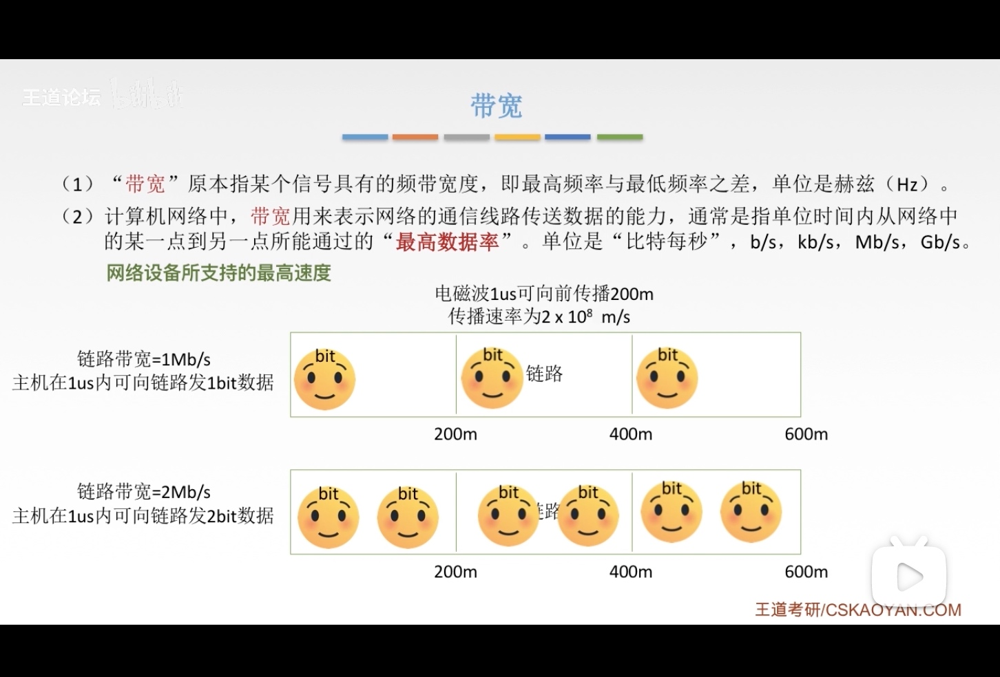
吞吐量
吞吐量:表示在单位时间内通过某个网络(或信道、接口)的数据量。单位b/s,kb/s,Mb/s
吞吐量受网络的带宽或网络的额定速率的限制
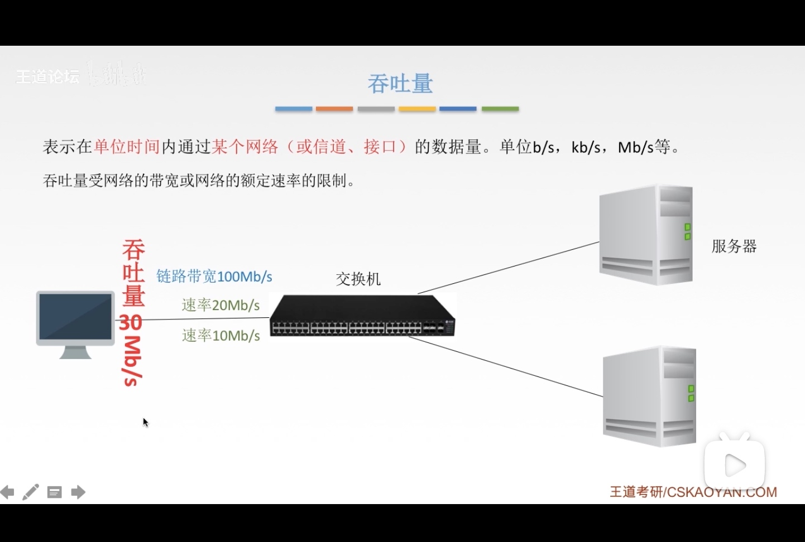
时延
时延 指数据(报文/分组/比特流)从网络(或链路)的一端传送到另一端所需的时间。也叫做延迟或迟延。单位是s
- 传输时延(发送时延): 从发送分组的第一个比特算起，到该分组的最后一个比特发送完毕所需的时间
- 传播时延: 取决于电磁波传播速度和链路长度
- 排队时延: 等待 输出/输入 链路可用(路由器)
- 处理时延: 检错、找出口(路由器)
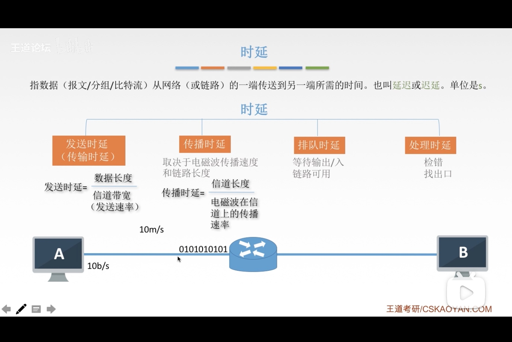
时延带宽积
时延带宽积 = 传播时延 * 带宽
时延带宽积又称为以比特为单位的链路长度。即"某段链路现在有多少比特"
往返时间RTT
往返时延RTT是指 从发送方发送数据开始，到发送方收到接收方的确认(接收方收到数据后立即发送确认)总共经历的时延
有一个说法: RTT越大，在收到确认之前，可以发送的数据越多
RTT包括:
1. 往返传播时延 = 传播时延\*2
2. 末端处理时间 (末端处理完发出ACK)
查看RTT:
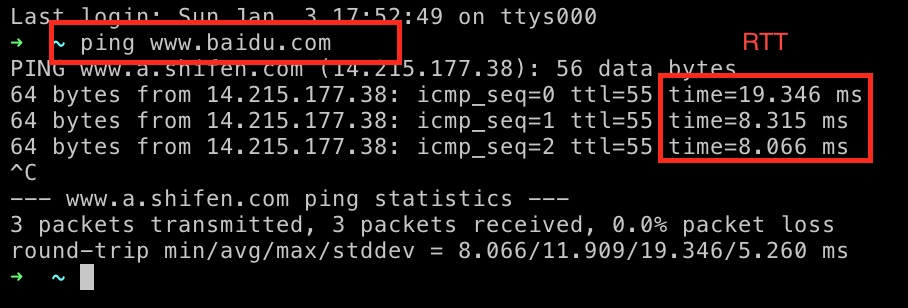
利用率
利用率分为:
1. 信道利用率 = (有数据通过时间 / (有+无)数据通过时间)
2. 网络利用率 = 所有信道利用率加权平均值

计算机网络分层结构
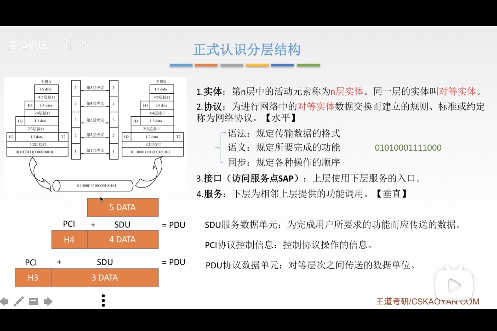
概念总结:
- 网络体系结构是从
功能上描述计算机网络结构 - 计算机网络体系结构简称网络体系结构是
分层结构 - 每层遵循某个/些
网络协议以完成本层功能 计算机网络体系结构是计算机网络的各层及其协议的集合- 第n层在向n+1层提供服务时，此服务不仅包含第n层本身的功能，还包含由下层服务提供的功能
- 仅仅在
相邻层间有接口，且所提供服务的具体实现细节对上一层完全屏蔽 - 体系结构是
抽象的，而实现是指运行的一些软件和硬件
OSI 参考模型
计算机网络分层结构:
1. 7层OSI参考模型(法定标准)
2. 4层TCP/IP参考模型(事实标准)
3. 从1、2中得出 5层的体系结构
为了解决计算机网络复杂的大问题,各个公司提出了自己的解决方案
- IBM提出SNA结构
- DEC提出NDA结构
- 美国国防部提出TCP/IP结构
目的:为了支持异构网络系统的互联互通
国际标准化组织(ISO)在1984年提出开放系统互联(OSI)参考模型
但是，OSI 理论成功， 市场失败。
失败原因:
- OSI缺乏实际经验，类似乌邦托
- OSI实现起来较复杂，且运行效率低
- OSI制定周期太长，故osi出来的时候没有办法及时进入市场。而且当时市场已经有了运行良好的TCP/IP
- OSI层次划分不合理，有些功能会在多个层次中出现有些弊端，不适应市场取消
| 层 | 说明 | 子网 | 设备 | 协议 | |
|---|---|---|---|---|---|
| 7 | 应用层 | 资源子网(数据处理) | 所有能和用户加护产生网络流量的程序 | FTP、SMTP、HTTP | |
| 6 | 表示层 | 资源子网 | 用户处理在两个通信系统中交换信息的表示方式(语法和语义)。功能:1数据格式变换 比特到图片;2数据加密解密; 3数据压缩和恢复 | JPEG、ASCII | |
| 5 | 会话层 | 资源子网 | 向表示层实体/用户进程提供建立连接并在连接上有序地传输数据。功能:1建立、管理、终止会话;2使用校验点可使会话在通信失效时从校验点/同步点继续恢复通信，实现数据同步 | ADSP、ASP | |
| 4 | 传输层 | 负责主机中两个进程的通信，即端到端的通信，传输单位是报文或用户数据报。功能:1可靠传输、不可靠传输;2差错控制;3流量控制;4复用分用 | TCP、UDP | ||
| 3 | 网络层 | 通信子网(数据通信) | 路由器 | 主要任务是把分组从源端传到目的端，为分组交换网上的不同主机提供通信服务，传输单位是数据报。功能:1路由选择(最佳路径);2流量控制;3差错控制;4拥塞控制 | IP、IPX、ICMP、IGMP、ARP、RARP、OSPF |
| 2 | 数据链路层 | 通信子网 | 交换机，网桥 | 主要任务是吧网络层传下来的数据报组装成帧，数据链路层传输单位是帧。功能:1成帧(定义帧的开始和结束);2差错控制 帧错+位错;3流量控制;4访问(接入)控制 控制对信道的访问; | SDLC、HDLC、PPP、STP |
| 1 | 物理层 | 通信子网 | 集线器，中继器 | 主要任务是在物理媒体上实现比特流的透明传输(不管所传数据是什么样的比特组合，都应当能够在链路上传送)，传输单位是比特。功能:1定义接口特性;2定义传输模式(单工、半双工、双工);3定义传输速率;4比特同步;5比特编码; |
Rj45、802.3 |
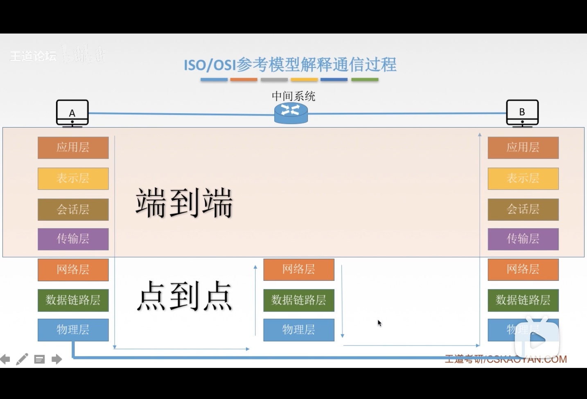
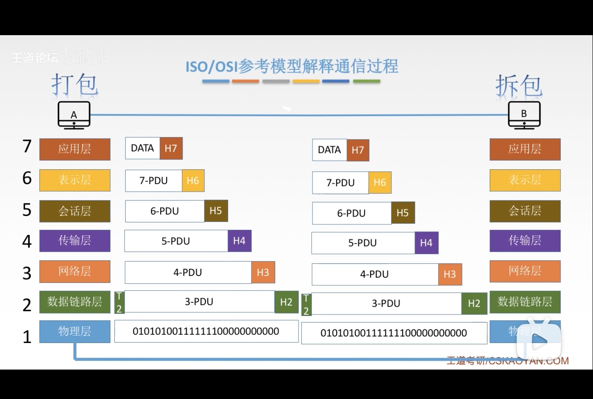
TCP/IP模型
先有TCP/IP协议栈，后面才有TCP/IP参考模型
| OSI参考木星 | TCP/IP参考木星 | TCP/IP协议栈 |
|---|---|---|
| 应用层 | 应用层 | HTTP/FTP/DNS |
| 表示层 | 应用层 | HTTP/FTP/DNS |
| 会话层 | 应用层 | HTTP/FTP/DNS |
| 传输层 | 传输层 | TCP/UDP |
| 网络层 | 网际层 | IP |
| 数据链路层 | 网络接口层 | Ethernet/ATM/Frame Relay |
| 物理层 | 网络接口层 | Ethernet/ATM/Frame Relay |
OSI和 TCP/IP 相同点:
1. 都分层
2. 基于独立的协议栈的概念
3. 可以实现异构网络互连
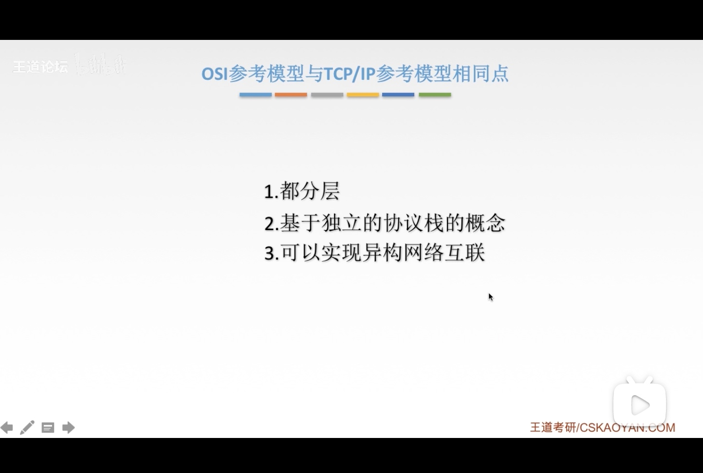
OSI和 TCP/IP 不通点:
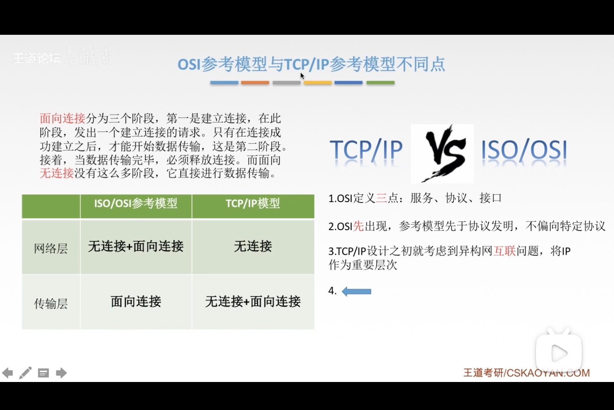
5层参考模型
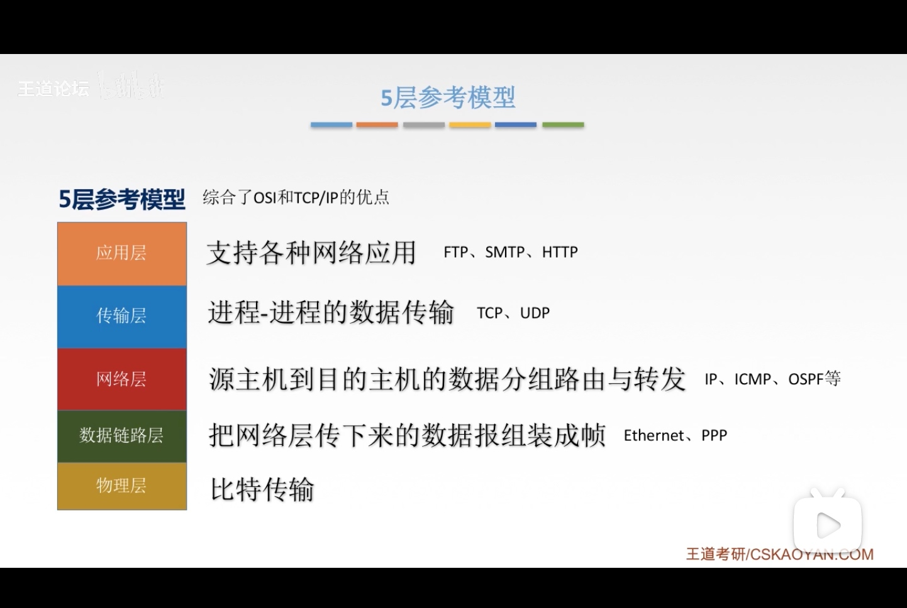
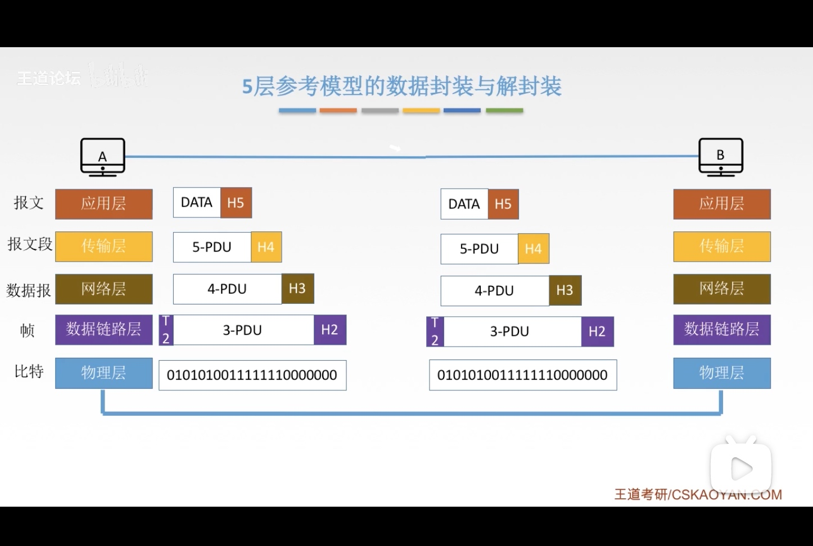